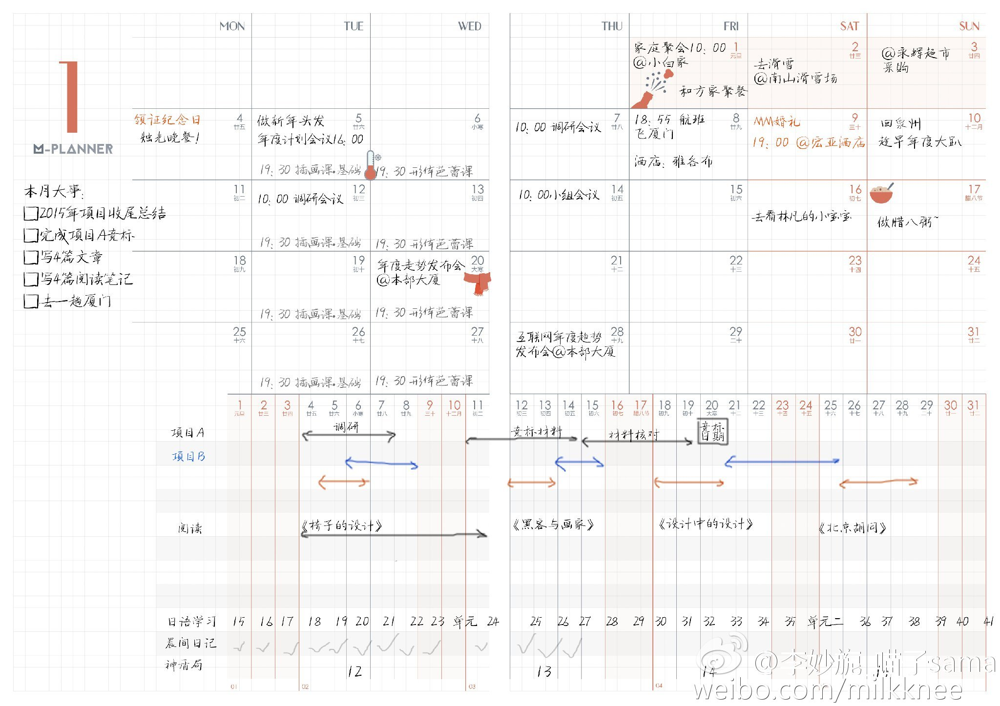
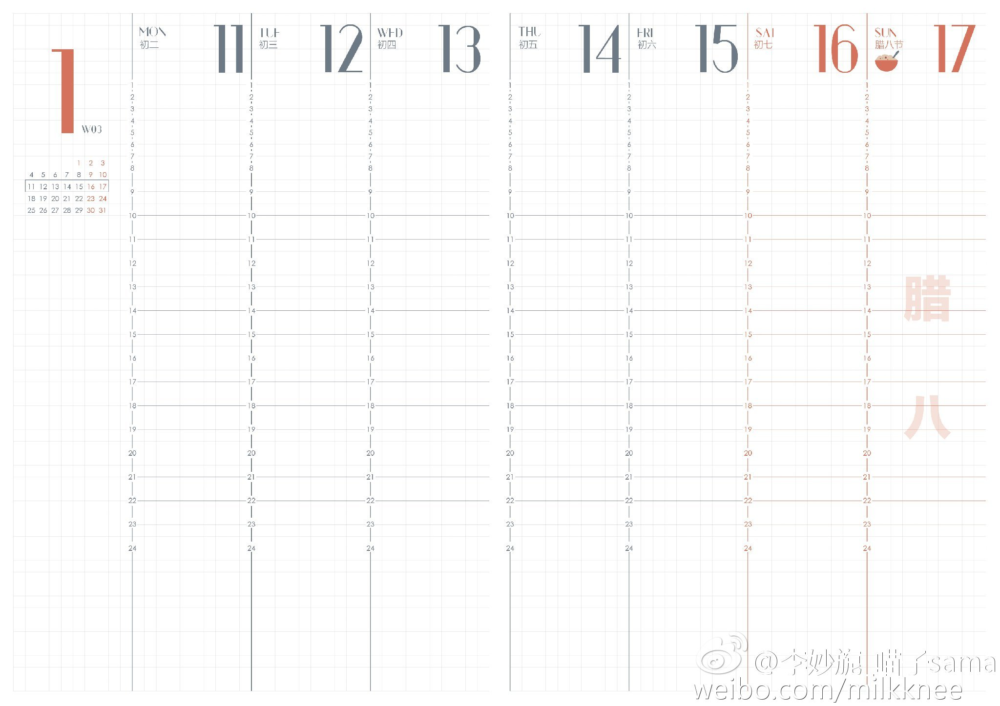
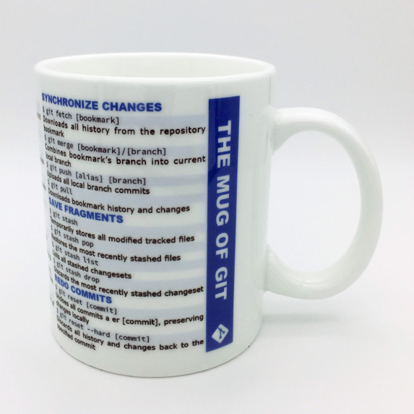
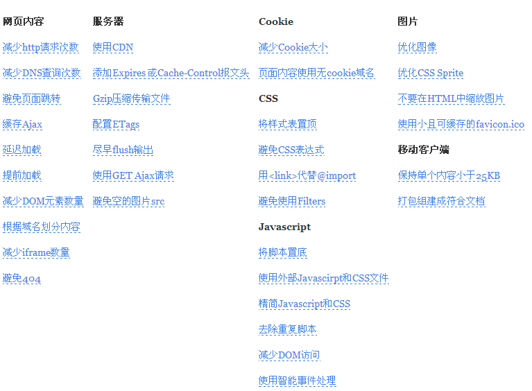
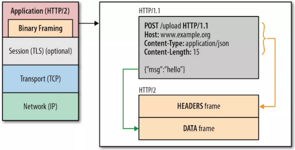
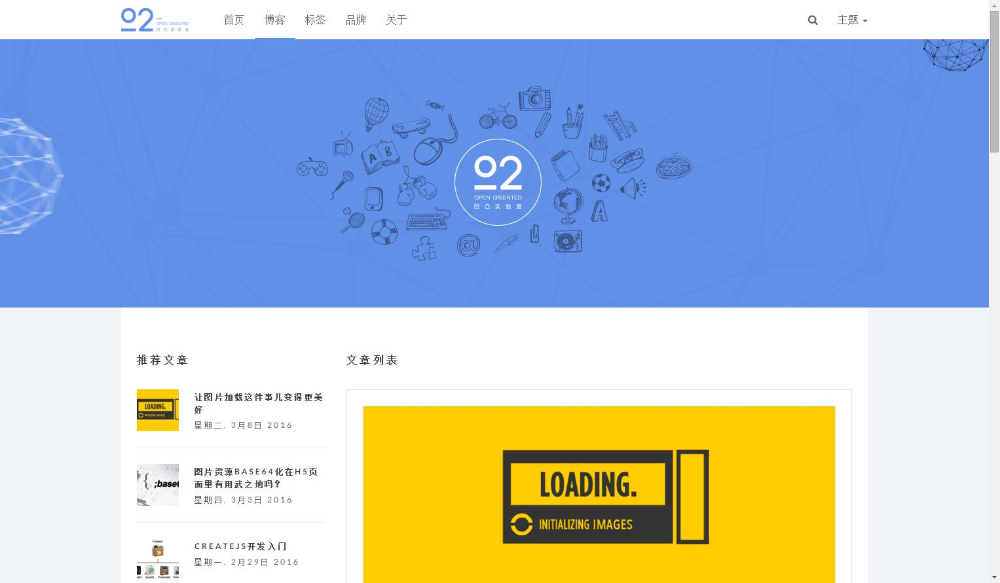
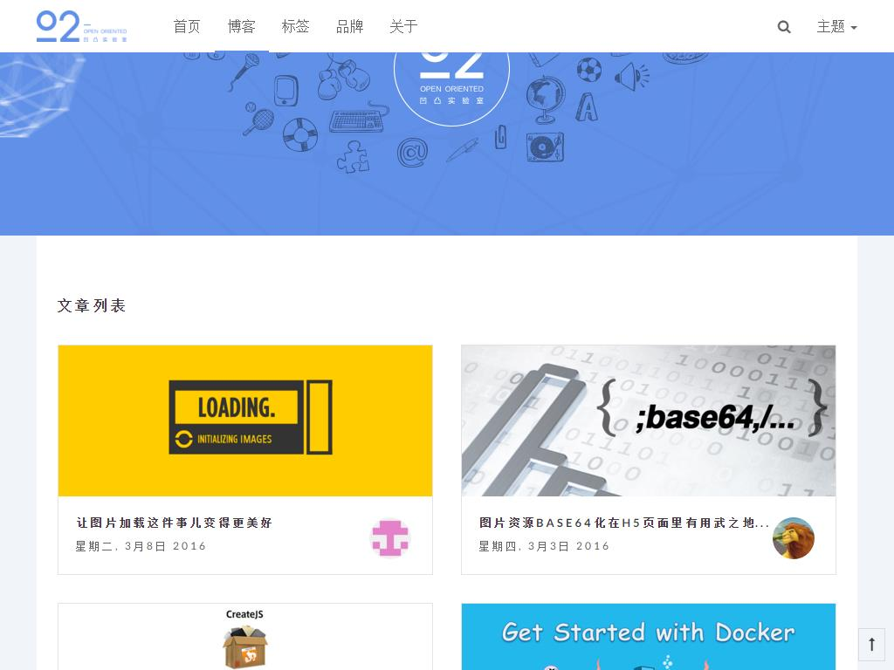
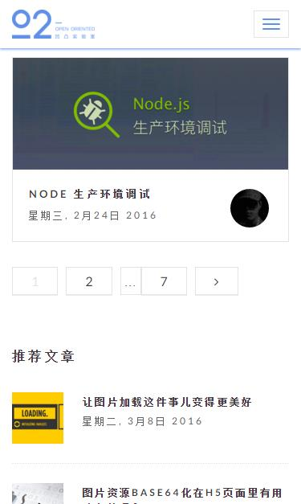
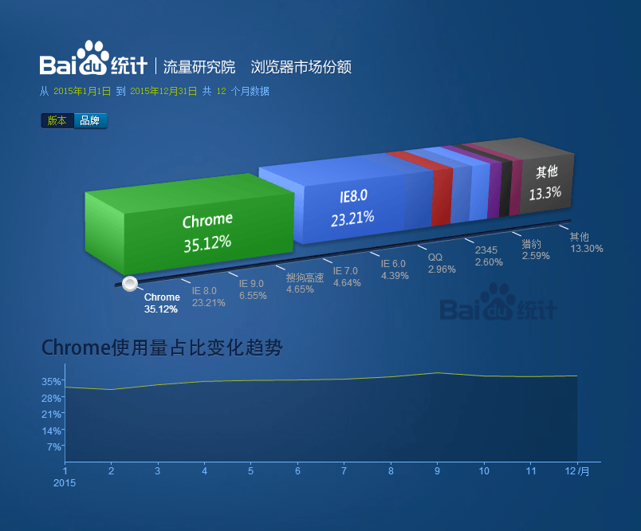
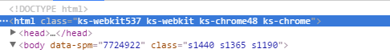

萌妹子教你做前端优化~
篇幅可能有点长，我想先聊一聊阅读的方式，我希望你阅读的时候，能够把我当作你的竞争对手，你的梦想是超越我。你想超越我，就得了解我懂什么对吧，好，开始阅读~ ~ 哈哈哈 ~ ~ ~
本文主要从工作效率、速度性能、稳定性、响应式、兼容性、搜索SEO、信息无障碍等方面进行讲解。
1 工作效率
你是否经常处于这样的场景：从早上忙到晚上八九点，一会与产品经理沟通，一会在部门群聊一下新奇的东西，一会被设计美眉纠缠住拖不了身，有时还开不了部门的会议因为页面急着上线，然后继续加班~~~
怎么提高我们的工作效率？下面大概从四个方面讲解：
- 时间管理
- 利用工具
- 经验和阅历
- 使用新技术
1.1 时间管理
凡是时间管理，都会联想到计划这个词。我们先看看别人家的月计划表和周计划表，之所以周计划表为空，是希望你能把它下载下来打印出来，行动从计划开始：
月计划表：

周计划表：

当然计划不要做得过于琐碎，且不要占用自己太多时间。做好计划之余，在执行过程中需要注意几点：
- 正确的时间点做正确的事，比如早上比较精神，可选择比较难的项目开展，可容易达到高效率。
- 专注一件事情，尽量不要被琐碎或其他事情影响，而且不要频繁地去看计划表，最好是做完一件再去看，否则容易焦虑导致无法专心。
1.2 利用工具
第一样工具，比如程序员杯子：

利用工具有什么好处呢？
- 减少重复性工作。
- 减少繁琐工作流程，一键式化。
1.2.1 编辑器
选择好一个前端编辑器是比较重要的。目前sublime、webstorm和vim是比较常见的，建议不使用Dreamweaver。
sublime目前还是不错的选择，可以安装插件，比如BracketHighlighter 高亮显示、JsFormat、Emmet html/CSS快速编辑以及DocBlockr插件，快速输入jsDoc注释等，还可以自定义代码段snippets。
无论你使用哪种编辑器，你需要的是熟悉这个编辑器并熟练它的快捷键。
1.2.2 浏览器开发者工具
作为前端人员，首选的浏览器当然是chrome。推荐阅读Chrome开发者工具不完全指南一系列文章，它从一些基础的功能开始到它的一些高级性能分析器（Timeline、Profiles），熟悉chrome对我们的开发工作有很大的作用。
1.2.3 其他常用工具
切图工具：photoshop cc切图之智能切图、 cutterman
量色、测距工具：FastStone Capture、马克鳗 - 设计稿标注
图片压缩：tinypng、智图
生成雪碧图：spritebox、CSS Sprite Generator、cssgaga
调试工具：Fiddler 、weinre 、微信调试工具；
1.2.4 前端工程化
凡是重复的，必须使用工具自动完成。
工具众多，我们就有一种想法，能不能有一种工具能帮我们自动生成雪碧图、 css压缩、图片压缩等等，然后就出现了前端工程化。前端工程化一般可分为五个步骤：
- 初始，生成基础目录结构和样式库。
- 开发，实时预览、预编译。
- 构建，预编译、合并、压缩。
- 发布，将构建后静态文件发布上线。
- 打包，资源路径转换，源码打包 。
这里推荐一个工具fis，解决前端开发中自动化工具、性能优化、模块化框架、开发规范、代码部署、开发流程等问题。还有凹凸实验室研发的athena，O2Team构建项目流程工具，可以生成相应目录和代码，同时对项目进行编译， 一次安装，到处运行。
1.3 阅历和经验
我所理解的程序员兼并聪明以及“懒惰”精神，推崇懒惰式开发，即把问题理解清楚，确保将要写的代码能真正的解决问题，这将会避免之后写出大量无用的代码，正所谓“懒”出效率。
我们的阅历和经验可以大大提高开发效率，思考代码的时间增加从而选出最优方案，因此写代码速度更快以及代码长度更短，对问题的透彻理解使调试代码的速度也更快。
根据阅历和经验，也可借助其他人的，我们进行整理从而形成自己或团队的规范，这可大大提高我们的写码速度。
1.4 使用新技术
使用新技术如何提高我们的工作效率。一贯我们都使用我们熟悉的技术去开发一个技术处理方案，毕竟学习新技术的时间成本还是存在的。但是还是不能忽略一些新技术的存在，一般新技术包含了一些很棒的新特性，可以更加方便的实现很多复杂的操作，提高开发人员的效率，比如ES6。用你的慧眼去积累新技术，会派上用场的。
2 速度性能
为什么需要前端性能优化？性能优化可以从哪几个方面入手？
遇到一个页面，5秒还没加载完成，那个菊花转啊转，或者页面完全白屏，那简直把人逼疯了。从用户体验的角度看，前端性能优化是非常有必要的。网页最长加载时间一般不能超过3秒。
首先我们需要确定网页的性能指标，可量化的目标以及可持续跟踪的优化数据是性能优化工作得以持续进行的保障，同时也是源动力！比如：
- 首屏加载时长
- DOM加载时长
- 页面白屏时长
我们一般通过三种方式来检验我们的网页性能：
- 通过浏览器开发者工具或浏览器插件、Fiddler、Charles等查看页面加载情况。原理是通过追踪HTTP请求与响应的时间，以图形的方式列出所有资源的下载情况。缺点是人为操作，难以实现批量测试与统计。
- 在页面中引入额外的代码钩子来记录时间等相关数据。缺点是加重了开发者与测试人员的负担，还有可能因为检测代码本身的潜在问题影响页面的性能。如果好一点的话，会接入一个性能数据收集系统，采取并分析数据。
- 使用第三方的工具如Page Speed和WebPagetest，能够选择在不同浏览器和不同地域进行测试，并且给出各方面的评分以及提供一些优化建议。但某些服务需要排队等待，并且难以实现批量测试与统计。下面是使用WebPagetest测试京东首页的情况：

可喜可贺，W3C推出了一套性能API标准，目的是简化开发者对网站性能进行精确分析与控制的过程，最终实现性能的提高。比如通过Navigation Timing记录的关键时间点来统计页面完成所用的时间，部分使用方法：1
2
3
4
5
6var timing = window.performance.timing
timing.domLoading //浏览器开始解析 HTML 文档第一批收到的字节
timing.domInteractive // 浏览器完成解析并且所有 HTML 和 DOM 构建完毕
timing.domContentLoadedEventStart //DOM 解析完成后，网页内资源加载开始的时间
timing.domContentLoadedEventEnd // DOM 解析完成后，网页内资源加载完成的时间（如 JS 脚本加载执行完毕）
timing.domComplete //网页上所有资源（图片等）下载完成,且准备就绪的时间
持续追踪性能数据，要选择合适的页面性能测量工具或API，一旦选定后，不再更换，以保证历史数据的可参照性。我们还要形成一种意识，达成性能联盟小组，对于重要的业务或者页面，一定要从性能的角度考虑问题，有理有据地拒绝有损于前端性能的业务需求或改动。
人人都知道雅虎军规，那我就来截个图吧！

以下，我们从服务端、网络、客户端三个方面来一一突破速度性能的提升。
2.1 没事少烦我-服务端
2.1.1 使用内容分发网络（Content Delivery Network，CDN）
通过在现有的Internet中增加一层新的网络架构，将网站的内容发布到最接近用户的 cache服务器内，通过DNS负载均衡的技术，判断用户来源就近访问cache服务器取得所需的内容。深圳用户访问遥远的美国服务器，当然不理想了，深圳用户访问深圳服务器把静态内容分布到CDN减少了用户影响时间20%或更多。
2.1.2 静态资源缓存，移动端离线缓存
如果可以减少服务端的负担，在应用离线时可使用资源或加载资源更快，岂不乐哉？
缓存利用可包括：添加 Expires 头，配置 ETag，使 Ajax 可缓存等。其实，恰当的缓存设置可以大大的减少 HTTP请求，也可以节省带宽 。
- 配置 ETag：即If-None-Match: 上次 ETag 的内容。浏览器会发出请求询问服务端，资源是否过期；服务端发现,没有过期，直接返回一个状态码为 304、正文为空的响应，告知浏览器使用本地缓存；如果资源有更新，服务端返回状态码 200、Etag 和正文。这个过程被称之为 HTTP 的协商缓存，通常也叫做弱缓存。
- 添加 Expires 头：服务端通过响应头告诉浏览器，在什么时间之前（Expires）或在多长时间之内（Cache-Control: Max-age=xxx），不要再请求服务器了。这个机制我们通常称之为 HTTP 的强缓存。一般会对 CSS、JS、图片等资源使用强缓存，而入口文件（HTML）一般使用协商缓存或不缓存。
AppCache：
主要利用manifest 文件，它是简单的文本文件，作用是告知浏览器被缓存的内容（以及不缓存的内容）。
manifest 文件可分为三个部分：
- CACHE MANIFEST - 在此标题下列出的文件将在首次下载后进行缓存，等价于CACHE
- NETWORK - 在此标题下列出的文件需要与服务器的连接，且不会被缓存
FALLBACK - 在此标题下列出的文件规定当页面无法访问时的回退页面
使用此种方案的步骤：
- 整理出需要缓存的静态文件列表，如juqery.js和gb.css
- 配置服务器支持
- 确定内容更新机制和浏览器兼容方案
LocalStorage：用于持久化的本地存储，除非主动删除数据，否则数据是永远不会过期的。
2.2 省着点用-网络
2.2.1 减少请求数
可通过以下方式减少请求数：
- 小图片合并雪碧图；
- JS、CSS文件选择性合并；
- 避免重复的资源请求。
减少请求数对于速度优化来说最重要最有效的。一个完整的请求需要经过域名解析以及DNS寻址、与服务器建立连接、发送数据、等待服务器响应、接收数据的过程；每个请求都需要携带数据，因此每个请求都需要占用带宽；浏览器进行并发请求的请求数是有上限的。请求多了的情况，明显增加了网页的响应时间。对于网络差的用户更加有效。一个页面由多个模块拼接而成，几个模块中请求了同样的资源时，就会导致资源的重复请求。
2.2.2 减少文件大小（减少请求带宽）
- 压缩CSS、JS、图片；
- 尽可能控制DOM节点数；
- 精简css、 JavaScript，移除注释、空格、重复css和脚本。
- 开启Gzip，Gzip的思想就是把文件先在服务器端进行压缩，且压缩率达到85%，然后再传输，传输完毕后浏览器会 重新对压缩过的内容进行解压缩，并执行。。好处在于Gzip的支持已经很好，且爬虫可识别，压缩率达到66%-85%显著减少了文件传输的大小。另外，gzip对pdf文件的压缩效果不大，而且会浪费CPU。
2.2.3 合理使用静态资源域名
域名的要求是短小且独立。
短小可以减少头部开销，因为域名越短请求头起始行的 URI 就越短。之所以要求独立，因为独立域名不会共享主域的 Cookie，可以有效减小请求头大小，这个策略一般称之为 Cookie-Free Domain；另外一个原因是浏览器对相同域名的并发连接数限制，一般允许同域名并发 6~8 个连接，域名不是越多越好，每个域名的第一个连接都要经历 DNS 查询（DNS Lookup），导致会耗费一定的时间，控制域名使用在2-4个之间。另外注意：同一静态资源在不同页面被散列到不同子域下，会导致无法利用 HTTP 缓存。
2.2.4 使用HTTP 2
HTTP 2 相比 HTTP 1.1 的更新大部分集中于：
- 多路复用，服务器推送：开启Server Push，很好地解决如何让重要资源尽快加载这个问题。同域名下或者不同域但是同时满足同一个 IP以及使用同一个证书的这两个条件中的所有通信都在单个连接上完成，此连接上同时打开任意数量的双向数据流（ HTTP 1.1 有连接数限制）：Server Push，意味着服务端可以在发送页面 HTML 时主动推送其它资源，有自己独立的 URL，可以被浏览器缓存；如果服务端推送的资源已经被浏览器缓存过，浏览器可以通过发送 RST_STREAM 帧来拒收。使用多域名加上相同的 IP 和证书部署 Web 服务有特殊的意义：让支持 HTTP/2 的终端只建立一个连接，用上 HTTP/2 协议带来的各种好处；而只支持 HTTP/1.1 的终端则会建立多个连接，达到同时更多并发请求的目的。
- HEAD 压缩：HTTP/2 将请求和响应数据分割为更小的帧，并对它们采用二进制编码（ Binary Framing ）。在 HTTP/1 中，HTTP 请求和响应都是由「状态行、请求 / 响应头部、消息主体」三部分组成，状态行和头部却没有经过任何压缩，直接以纯文本传输。如下图的比较：

在 HTTP/2 中，每个数据流都以消息的形式发送，而消息又由一个或多个帧组成。多个帧之间可以乱序发送，因为根据帧首部的流标识可以重新组装。
2.2 学会持家，让家变得简洁漂亮-客户端
- 使用外链CSS和JS，CSS放头，JS放尾，防止阻塞以减少对并发下载的影响，尽早刷新文档的输出。
- html的代码优化，如：
- 避免空的图片src；
- 协议自适应，减少html文件大小，将https://和http://都替换成//。
- css的代码优化，如：
- 建议使用类选择器，访问比较快；
- 不建议使用很长的base64；
- 避免CSS表达式；
- 避免使用Filters。
- js的代码优化：
- 避免使用eval和width；
- 减少作用域链查找；
- 减少DOM访问，尽量缓存DOM；
- 充分利用事件委托；
- 减少Repaint（重绘）和Reflow（重排）最好通过批量更新元素减少重排次数，如设置类class统一更新样式，在添加多个li
- 元素将会触发多次页面重排的情况下使用 DOM fargment 在内存中创建完整的 DOM 节点，然后再一次性添加到 DOM 中。
- 图片格式的选择：
- 颜色较为丰富的图片而且文件比较大的（40KB - 200KB）或者有内容的图片优先考虑 jpg；图标等颜色比较简单、文件体积不大、起修饰作用的图片，优先考虑使用 PNG 格式；图像颜色丰富而且图片文件不太大的（40KB 以下）或有半透明效果的优先考虑 PNG24 格式。
- 条件允许的，使用新格式WEBP和BPG。
- 用SVG和ICONFONT代替简单的图标。
- 用字蛛来代替艺术字体切图，它可剔除没有使用的字符，从而解决中文字体过大的问题，并编码成跨平台兼容的格式。
- 合理分配资源加载时间，按需加载，包括CSS、JS文件以及图片、业务模块等。
根据我们网页最初加载需要的最小内容集推断其他内容延迟加载；无条件提前加载公共内容或根据用户行为推断提前加载某些内容，如根据搜索框输入的文字来判断加载的内容。加载机制如下：- 预加载
- Dom Ready后加载
- onLoad后加载
- 滚动加载
- 减少DNS 查询：DNS 查询一般需要几毫秒到几百毫秒，移动环境下会更慢。我们可以预先读取DNS，减少用户等待时间。

3 稳定性
稳定性的第一要求是可用。最起码的要求是页面得出来，要不然没法用了。
其次讲究的是页面的可维护性，假如页面挂了，多久可以恢复过来，另外考虑页面挂的期间是否可以采取静态页面处理等方式。
页面的稳定性其实和前端安全挂钩，即使页面可以出来了，但是不能保证不会被黑掉，下文从前端安全的方面讲解。
3.1 常见攻击：
XSS (Cross Site Script) ，跨站脚本攻击，往Web页面里插入恶意html代码。特点是攻击者的代码必须能获取用户浏览器端的执行权限，要杜绝此类攻击出现可以在入口和出口进行严格的过滤。
类型：- 反射型XSS：一次性；将包含注入脚本的恶意链接发送给受害者。
- 持久型XSS：用户输入的数据“存储”在服务器端，比如一条包含XSS代码的留言。
DOM XSS：使用一些eval等有输出的语句意味着多了一份被XSS的风险。
应对策略：
- 当恶意代码值被作为某一标签的内容显示：在不需要html输入的地方对html 标签及一些特殊字符( ” < > & 等等 )做过滤，将其转化为不被浏览器解释执行的字符。
- 当恶意代码被作为某一标签的属性显示，通过用 “将属性截断来开辟新的属性或恶意方法：属性本身存在的 单引号和双引号都需要进行转码；对用户输入的html 标签及标签属性做白名单过滤，也可以对一些存在漏洞的标签和属性进行专门过滤。
CSRF(Cross Site Request Forgery)，跨站点伪造请求，通过伪造连接请求在用户不知情的情况下，让用户以自己的身份来完成攻击者需要达到的一些目的。
- cookie劫持，通过获取页面的权限，在页面中写一个简单的到恶意站点的请求，并获取用户的cookie登录某些站点。
对于crsf 和cookie 劫持的策略：- 通过 referer、token 或者 验证码 来检测用户提交。
- 尽量不要在页面的链接中暴露用户隐私信息。
- 对于用户修改删除等操作最好都使用post 操作 。
- 避免全站通用的cookie，严格设置cookie的域。
3.2 数据通道安全
国内的众多网站都没有实现全站HTTPS。这是目前为止最重要的一步，所有的数据在发送之前就会被加密，攻击者无法查看或篡改数据包的内容。HTTPS可以理解为HTTP+SSL/TLS，通过数据加密、校验数据完整性和身份认证三种机制来保障安全。HTTPS的缺点是网站在加上TLS证书时，可能导致RTT往返时延增加，并且 HTTPS通信过程的非对称和对称加解密计算会产生更多的服务器性能和时间上的消耗，但是这是可以优化的，这里就不细说了。
3.3浏览器安全
3.3.1 同源策略
首先了解一下同源策略：
- 源指的是有相同的HOST、相同的协议、相同的端口。
- 同源策略以源为单位，把资源天然分隔，保护了用户的信息安全。
- 绕过同源策略让javascript访问其他源的资源的方法，如：JSONP、CORS、flash等。
- 同源策略不是绝对安全的，面对很多攻击是无能为力的，比如XSS，因为此时攻击者就在同源之内。
不建议使用JSONP，因为JSONP通常在脚本中写一个回调函数，然后把回调函数的名字写在请求的URL中，因此如果请求数据的服务器被黑了，那么黑客就能在返回的数据中植入恶意代码，从而窃取用户的隐私信息。
跨域资源共享CORS允许资源提供方在响应头中加入一个特殊的标记，使你能通过XHR来获取、解析并验证数据。这样就能避免恶意代码在你的应用中执行。在响应头中加入的标记如下：1
Access-Control-Allow-Origin: allowed origins
如果对Access–Control-Allow-Origin设置为*其实是比较危险的，如果没有携带会话认证意味着信息被公开在全网，建议设置具体的域名，而且跨域的时候记得带上session id；严格审查请求信息，比如请求参数，还有http头信息，因为 http头可以伪造。
3.3.2 CSP(Content Security Policy)
CSP指定网站上所有脚本和图片等资源的源站点，也能阻止所有内联（inline）的脚本和样式。即使有人在页面评论或者留言中嵌入了脚本标签，这些脚本代码也不会被执行。可通过两种方式设置，如果 HTTP 头与 Meta 定义同时存在，则优先采用 HTTP 中的定义：
- 通过 HTTP 头，比如只允许脚本从本源加载：Content-Security-Policy: script-src ‘self’，其中script-src ‘self’是策略。
通过HTML的Meta标签，比如只允许脚本从本源加载：
1
<meta http-equiv="Content-Security-Policy" content="script-src 'self'">
其他策略：
- script-src – 设置可以接受的JavaScript代码的源站点
- style-src – 设置可以接受的CSS样式代码的源站点
- connect-src – 定义浏览器可以通过XHR、WebSocket或者 EventSource访问哪些站点
- font-src – 设置可以接受的字体文件的源站点
- frame-src – 定义浏览器可以通过iframe访问哪些站点
- img-src – 设置可以接受的图片的源站点
- media-src – 设置可以接受的音频和视频文件的源站点
- object-src – 设置可以接受的Flash和其它插件的源站点
缺点：
默认情况下，所有的内联JavaScript脚本都不会被执行，因为浏览器无法区分自己的内联脚本和黑客注入的脚本。
CSP还会默认阻止所有eval()风格的代码的执行，包括setInterval/setTimeout中的字符串和类似于new Function(‘return false’)之类的代码。
3.3.3 iframe 沙箱环境
利用iframe进行跨源；HTML5为iframe提供了安全属性 sandbox，iframe的能力将会被限制。
3.3.4 Secure和HttpOnly属性
Secure能确保cookie的内容只能通过SSL连接进行传输。Secure和HttpOnly属性告诉浏览器cookie的内容只能分别通过HTTP(S)协议进行访问，从而避免了被轻易窃取，比如禁止从JavaScript中的document.cookie访问，因此cookie在浏览器document中不可见了。如果单独使用的话，无法全面抵御跨站点脚本攻击，通常和其他技术组合使用。使用方法如下：1
Set-Cookie: <name>=<value>[; <name>=<value>] [; expires=<date>][; domain=<domain_name>][; path=<some_path>][; secure][; HttpOnly]
3.3.5 其他安全相关的HTTP 头
X-Content-Type-Options 告诉浏览器相信此服务器下发的资源的类型，防止类型嗅探攻击。
HPKP(Public Key Pinning) Public Key Pinning 是一个response 头，用来检测一个证书的公钥是否发生了改变，防止中间人攻击。
HSTS (HTTP Strict-Transport-Security) 强制使用TSL作为数据通道。
3.4 HTML5 对web安全的影响
html5有很多新的特性能力，然而能力越大，被攻破后的危险就越大。
HTML5 对xss的影响主要体现在:
- 攻击面更大，html5带来更多的标签和更多的属性如
<video>,<audio>,<canvas>等； - 危害更大，HTML5更多的资源可以被xss利用。黑客可以利用浏览器的一切权限，比如本地存储、GEO、服务器推送机制WebSocket，js多线程执行Webworker等。
比如localstorage只能通过js设置和获取，导致的结果是不能像cookie一样设置httponly等属性，所以localstorage中不能存放敏感信息，最好能够在服务端进行加密，可以配合CORS来获取网站的localstorage的信息。
4 响应式
响应式布局简而言之，就是一个网站能够兼容多个终端，可以为不同终端的用户提供更加舒适的界面和更好的用户体验。
- 基于栅格布局规划响应式设计，每个模块尽可能严格遵循栅格布局，符合栅格的小模块能很灵活的适应多个分辨率的展示。
- 拥抱flexbox。
- 使用动态的字体大小单位+rem单位使用。
- 使用CSS3 mediaQuery 技术响应用户设备。
- 利用百分比。
- 对低版本浏览器使用JS动态响应。
- 一套“自适应”素材兼容各种分辨率，提升页面性能，比如自适应的图片/视频素材。
比如凹凸实验室博客页面在PC端、iPad端、手机端的排版：
PC端：

iPad：

iphone 6：

5 兼容性
估计很多人都有体会，IE虐我千百遍，我待IE如初恋。当然，除了 IE 上有兼容性问题，其他浏览器比如 Android 上的低版本浏览器也有较多问题。
是否继续保持对低端浏览器的兼容性，我们可以用数据跟产品经理或者老板说话，减少我们的工作量，最好在项目之前就定下来支持最低支持的版本是什么，然后设计一个对应兼容方案。以下是百度统计的2015年的浏览器市场份额数据：

兼容性的原则：渐进增强与平稳退化。就是说，在低级浏览器能够保证其可用性和可访问性；渐进增强，在保证代码、页面在低级浏览器中的可用性及可访问性的基础上，逐步增加功能及用户体验。
如果出现兼容性问题了，怎么处理：
- 确认触发场景，什么浏览器、版本、什么情况下会出现这个问题，做到稳定复现。
- 找到问题原因，为什么会出现这样的问题（自己琢磨、网上搜、问同事）。
- 确定解决办法：参考现成的规范，比如某些属性不能使用以及一些hack的处理。
- 积累兼容性处理方法。
淘宝首页在兼容性上做了一个小创新：Html钩子
在html上加上操作系统、浏览器内核、浏览器类型、CSS3动画支持、IE各版本类，好处在于：
- 渐进增强 可以实现不同浏览器下差异化体验。
- 能快速定位并修复某个浏览器下的特定bug。
淘宝首页html钩子：

兼容性问题是老生常谈的问题了，团队之间共同努力形成一个bug兼容性积累文档，是最好不过的了。
6 搜索SEO
6.1 语义化
- 标签语义化对搜索引擎友好，良好的结构和语义容易被搜索引擎抓取。
- 善用标题h1，h2，h3，h4，h5，h6，特别是h1和h2；H(x)标签中使用关键字，可提升排名。同时设置 rel=“nofollow”避免权重流失。
- 使用 HTML5 中的 Microdata 对 Web 页面上已经存在的数据提供附加的语义。Microdata 由名字 / 值（name/value）对组成，每一个词汇表定义一组命名的属性。对 Microdata 的支持可以影响搜索结果的显示，使得显示结果更加丰富，虽然不能影响搜索结果的排名，但是网站的流量可能会有所增加。类似的技术还有资源描述框架RDF、微格式Microformat 。
6.2 衡量站点关键词优化
- 站点内容以及关键词的选择。
- 描述标签、关键词标签、代替属性。
- 长尾关键词：非目标关键词但也可以带来搜索流量的关键词；例如，目标关键词是服装，其长尾关键词可以是男士服装、冬装、户外运动装等。长尾关键词基本属性是：可延伸性，针对性强，范围广。
- 关键词的分布情况。
- 关键词密度、看重：合理的关键字密度可获得较高的排名位置，密度过大会起到相反的效果。一般说来，在大多数的搜索引擎中，关键词密度在2%~8%是一个较为适当的范围，有利于网站在搜索引擎中排名。
- 是否存在作弊行为。
6.3 链接
- 优化文件目录结构和URL。URL应该有语义性，简短易懂。
- 通过推广暴露自己的链接，增加信任度。链接分为外向链接和内向（反向）链接，外向链接就是从本站点到其他站点，内向链接就是从其他站点到我的站点，可以尝试使用反向链接生成器。或者通过写软文、发布分类信息、发布博客文章来推广自己的网站。
- 锚文本 ：把关键词做一个链接，指向别的网页，这种形式的链接就叫作锚文本。搜索引擎可以根据指向某一个网页的链接的锚文本描述来判断该网页的内容属性。
6.4 良好的网站导航和sitemap
网站需要有一个良好的导航，控制根目录和各子目录的关键，通过sitemap可以帮助网站主了解网站结构，也方便搜索引擎收录整个站点。
7 其他优化
7.1 信息无障碍
信息无障碍一般可以从以下几点入手：
- 添加landmark角色，在页面主要操作区域（搜索框、登录框、列表内容）添加“role”标签加以说明。landmark值一般有：banner（banner）、complementary（辅助内容区）、contentinfo（网站信息和版权）、form（表单）、main（主内容区）、navigation（导航区）、search（搜索区）。
- 提供文字替代方案。比如给图片或其他元素提供适当的alt属性或者title属性的值。
- 表单使用label标签。
- 使用heading做信息架构。读屏软件提供了快捷键切换heading，相关用户可通过读屏软件了解我们的网站信息架构。
- 给页面里重要区块和功能添加accesskey，可以快速定位。
- 触发界面转换需设置焦点。比如，对于浮层需要注意避免“Tab”焦点中断。
- 考虑到老年眼睛老花，因此需要保证字体够大，或者网站可缩放。
具体可参考无障碍阅读
7.2 微动画
通过前端动画技术给页面进行优化，比如：
- 商品图片hover效果
- 小图标旋转效果
- 购物车微动画
- loading动画，当加载页面需要一定时间，特别是移动端，可以通过有趣的loading动画吸引用户，这里有一些有趣的loading动画
7.3 requireJs
requireJs框架特性：
- 前端设计及开发人员统一代码规范。
- 按需加载。
- AMD规范：以简单而优雅的方式统一了JavaScript的模块定义和加载机制，降低了学习和使用各种框架的门槛，能够以一种统一的方式去定义和使用模块，提高开发效率，降低了应用维护成本。腾讯系一般使用AMD
- 与Grunt结合可实现一站式工作流。
7.4 多标签状态同步
相关技术Page Visibility：
- 页面可见性API就是表示网页可见还是不可见的。（是否在当前激活tab下，是否最小化）。
- 浏览器支持：IE10+、Chrome、FireFox。
7.5 个性化推荐
- HTML5 Geolocation API获得用户的地理位置，进行基于地理位置的运营。
8 参考
能提高前端工作效率的那些事
基于Gulp的前端自动化
繁星网的前端性能优化之路
前端性能优化—-yahoo前端性能团队总结的35条黄金定律
前端性能数据之采集和分析
Web性能API——帮你分析Web前端性能
前端工程师如何系统地整理和累积兼容性相关的知识？
玩转HTML5移动页面(优化篇)
HTTP/2 与 WEB 性能优化（一）
HTTP/2 与 WEB 性能优化（二）
HTTP/2 与 WEB 性能优化（三）
HTTP/2 头部压缩技术介绍
从零开始学web安全（1）
关于Web安全，99%的网站都忽略了这些
网页前端常见的攻击方式和预防攻击的方法
Web客户端安全性最佳实践
HTML5 安全问题解析
10步大幅提升网站可访问性